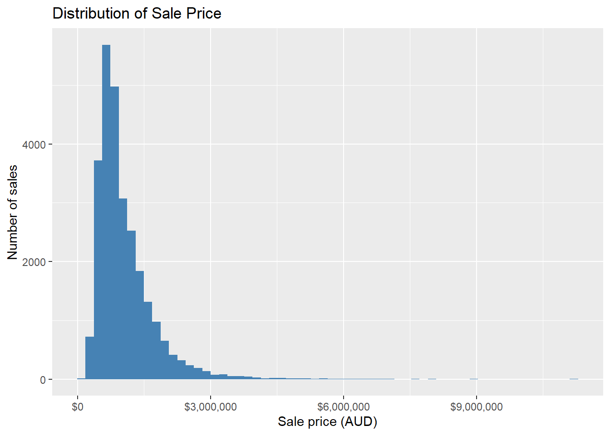
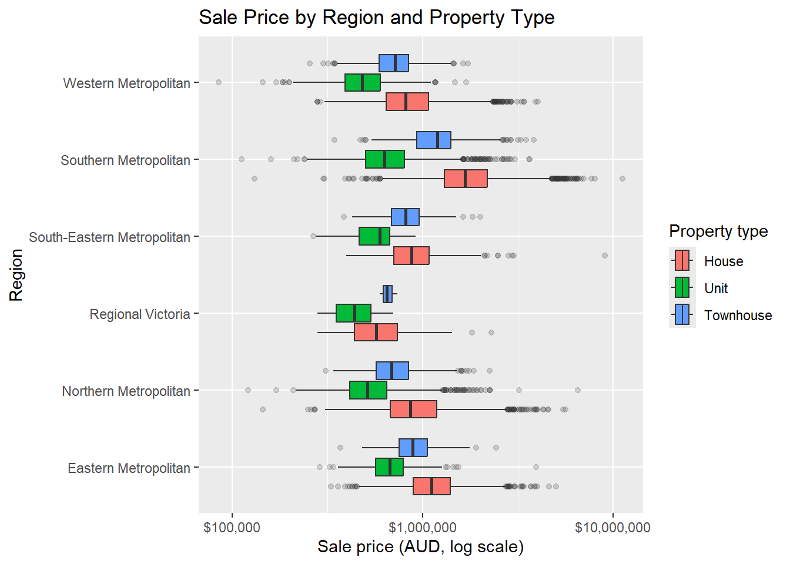
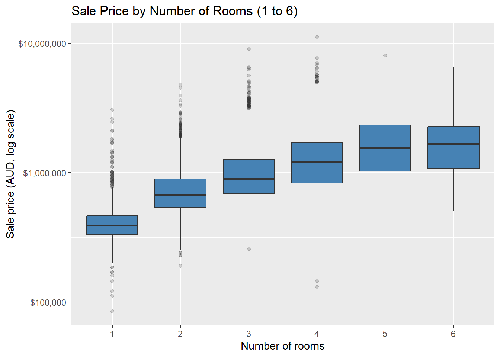
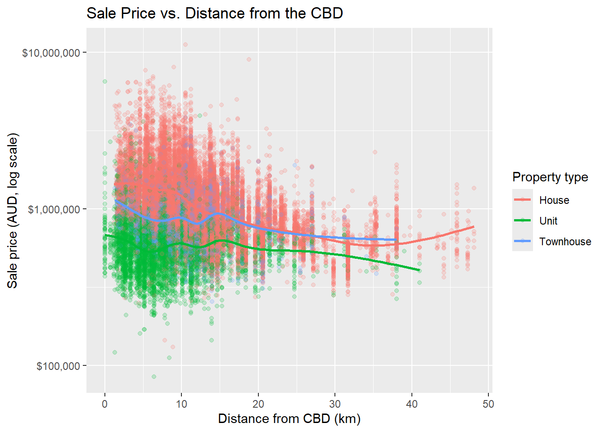
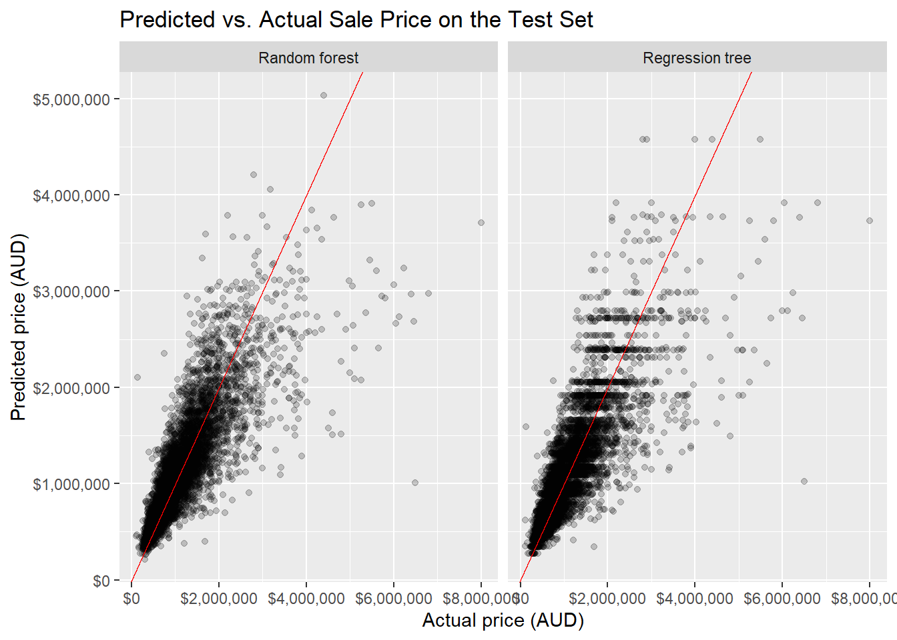

This analysis uses the Melbourne Housing Market dataset on Kaggle, which contains residential property sales in Melbourne, Australia, from January 2016 to March 2018. Each sale records the price along with characteristics of the property and the sale, such as the property type, number of rooms, distance from the central business district (CBD), region, and sale method.
The main focus is to predict a property’s sale price for these features. Two families of models are compared, a regression tree and a random forest, with each tuned using 5-fold cross-validation on a training set. The best model of each type is then compared on a held-out test set, and the overall winner is fit to the full data and made available through an API.
Data
The data is read in from the raw Kaggle file stored in the data/ folder in the repository and cleaned the same way as in Project 2. Sales without a recorded price are removed because price is the response variable. Three rows with no region information and one duplicate row are also removed. The single-letter codes for property type and sale method are converted to readable labels, and the three small regional Victoria areas (about 430 sales combined) are grouped into one “Regional Victoria” level. Only the response and the candidate predictors are kept for modeling.
housing <-read_csv("data/Melbourne_housing_FULL.csv",na =c("", "NA", "#N/A")) |># make column names lowercase snake_caseclean_names() |>distinct() |># we chose price is the response, then thes ales without a price are not useful for our analysis# we can drop them, so 3 rows with no region informationfilter(!is.na(price), !is.na(regionname)) |>mutate(type =factor(type, levels =c("h", "u", "t"),labels =c("House", "Unit", "Townhouse")),method =factor(method,levels =c("S", "SP", "PI", "VB", "SA"),labels =c("Sold", "Sold prior", "Passed in","Vendor bid", "Sold after auction")),# combine the three small "Victoria" regions into one levelregion_group =if_else(str_detect(regionname, "Victoria"),"Regional Victoria", regionname) |>factor() ) |># keep the response and candidate predictorsselect(price, rooms, distance, bathroom, car, type, method, region_group)glimpse(housing)
# number of missing values in each columncolSums(is.na(housing))
price rooms distance bathroom car type
0 0 0 6444 6821 0
method region_group
0 0
Exploratory Data Analysis
Before modeling, the data is explored to understand the distribution of the response, how each predictor relates to price, and what this means for the choice of models. This exploration uses the full cleaned data set.
# A tibble: 1 × 6
n mean median sd min max
<int> <dbl> <dbl> <dbl> <dbl> <dbl>
1 27244 1050210. 870000 641492. 85000 11200000
housing |>ggplot(aes(x = price)) +geom_histogram(bins =60, fill ="steelblue") +scale_x_continuous(labels = scales::label_dollar()) +labs(title ="Distribution of Sale Price",x ="Sale price (AUD)", y ="Number of sales")

Sale prices range from $85,000 to $11.2 million. The distribution is strongly right-skewed: the mean ($1,050,210) is well above the median ($870,000), and a small number of very expensive properties create a long right tail. This matters for the metric: RMSE squares the errors, so mispredicting these expensive properties will weigh heavily on it.
Categorical predictors
# one-way tables: how many sales fall in each categoryhousing |>count(type) |>mutate(percent =round(100* n /sum(n), 1))
# A tibble: 3 × 3
type n percent
<fct> <int> <dbl>
1 House 18470 67.8
2 Unit 5908 21.7
3 Townhouse 2866 10.5
housing |>count(region_group) |>mutate(percent =round(100* n /sum(n), 1))
housing |>count(method) |>mutate(percent =round(100* n /sum(n), 1))
# A tibble: 5 × 3
method n percent
<fct> <int> <dbl>
1 Sold 17514 64.3
2 Sold prior 3602 13.2
3 Passed in 3255 11.9
4 Vendor bid 2683 9.8
5 Sold after auction 190 0.7
# two-way table: property type by regionhousing |>count(region_group, type) |>pivot_wider(names_from = type, values_from = n, values_fill =0)
# A tibble: 6 × 4
region_group House Unit Townhouse
<fct> <int> <int> <int>
1 Eastern Metropolitan 2552 431 289
2 Northern Metropolitan 5309 1689 866
3 Regional Victoria 415 10 3
4 South-Eastern Metropolitan 1037 185 119
5 Southern Metropolitan 4722 2782 1020
6 Western Metropolitan 4435 811 569
Houses account for two-thirds of sales, at 68%, with units making up 22% and townhomes 11%. The majority of sales are in the Southern, Northern, and Western Metropolitan regions, with only 428 sales in Regional Victoria.
# price summaries at each level of the categorical predictorshousing |>group_by(type) |>summarize(n =n(), median_price =median(price), mean_price =mean(price))
# A tibble: 3 × 4
type n median_price mean_price
<fct> <int> <dbl> <dbl>
1 House 18470 1015000 1203771.
2 Unit 5908 580000 627930.
3 Townhouse 2866 850000 931077.
housing |>ggplot(aes(x = price, y = region_group, fill = type)) +geom_boxplot(outlier.alpha =0.2) +scale_x_log10(labels = scales::label_dollar()) +labs(title ="Sale Price by Region and Property Type",x ="Sale price (AUD, log scale)", y ="Region",fill ="Property type")

The price is strongly correlated with the property type and the region. The median house sells for $1,015,000 compared to $850,000 for townhomes and $580,000 for units. By region, median prices range from $569,000 in Regional Victoria to $1,250,000 in Southern Metropolitan. The box plot also shows that the gap between property types differs by region, an interaction that tree-based models can capture automatically. The sale method has a weaker relationship with price (medians from $751,000 for “Sold prior” to $970,000 for “Vendor bid”).
Numeric predictors
# correlation of each numeric predictor with pricehousing |>select(rooms, distance, bathroom, car) |>map_dbl(\(x) cor(x, housing$price, use ="complete.obs")) |># complete.obs = skips missing values from bathroom/carround(2)
rooms distance bathroom car
0.47 -0.21 0.43 0.20
housing |>filter(rooms <=6) |>ggplot(aes(x =factor(rooms), y = price)) +geom_boxplot(fill ="steelblue", outlier.alpha =0.2) +scale_y_log10(labels = scales::label_dollar()) +labs(title ="Sale Price by Number of Rooms (1 to 6)",x ="Number of rooms", y ="Sale price (AUD, log scale)")

housing |>ggplot(aes(x = distance, y = price, color = type)) +geom_point(alpha =0.2) +geom_smooth(se =FALSE) +scale_y_log10(labels = scales::label_dollar()) +labs(title ="Sale Price vs. Distance from the CBD",x ="Distance from CBD (km)", y ="Sale price (AUD, log scale)",color ="Property type")
`geom_smooth()` using method = 'gam' and formula = 'y ~ s(x, bs = "cs")'

The number of rooms (correlation 0.47) and bathrooms (0.43) have the strongest relationships with price: the median price rises from $390,000 for 1-room properties to $1,550,000 for 5 rooms. Distance from the CBD has a negative relationship (−0.21), with median prices falling from about $977,000 within 5 km to $663,000 beyond 20 km, but the smoothed curves show the relationship is not a straight line and differs by property type. Car spaces have the weakest relationship (0.20).
Summary
The exploration shows that price is right-skewed, that property type, region, rooms, and bathrooms are strongly related to price, and that the predictors interact. Tree-based models are well suited for this because they directly handle skewed responses and categorical predictors and capture nonlinear relationships and interactions without requiring them to be specified in advance.
Train/Test Split
The data is split into a training set (70% of sales) and test sets (30%). The models are tuned and chosen using only the traning set. The test set is held back until the end, so it returns an decent estimate of how well the final models predict sales they have never seen. A seed is set so the split and the results are reproducible.
In order to choose tuning parameters within each model family, the training set is further divided into 5 folds for cross-validation. Each candidaite model is fit 5 times, each time 4 folds and evaluated on the remaining fold, and its performance is average across the 5 held-out folds.
housing_folds <-vfold_cv(housing_training, v =5)housing_folds
Since we chose price as the response, we will use root mean squared error (RMSE) as the metric to evaluate our regression models. Let us define the RMSE as:
\[
\text{RMSE} = \sqrt{\frac{1}{n}\sum_{i=1}^{n}\left(y_i - \hat{y}_i\right)^2}
\] where \(y_i\) is the actual sale price and \(\hat{y}_i\) is the model’s predicted price for the \(i\)th sale.
RMSE is useful for this prediction problem as for these main reasons: - This is the standard metric for regression models and since both models are regressions models, makes the comparison straightforward. - RMSE is measured in Australian dollars, so it can be read directly as a typical size of prediction eror, i.e “the model’s prediction are off by about $X on average”. - It penalizes large errors more heavily, meaning that errors are squared before averaging, a prediction that is off by $500,000 counts far more than several predictions that are each off by $50,000. For house prices, large misses are the most costly mistakes, so we want a metric that punishes them.
The mean absolute error (MAE), the average size of the errors withouts quaring, is also reported as a secondary metric because it is less influenced by a few very expensive properties. However, RMSE is used to select the best tuning parameters and the final model.
housing_metrics <-metric_set(rmse, mae)
Recipe
A recipe defines the model formula and any pre-processing steps. Both models families will use the same recipe so they are compared on equal footing. The response variable is price and the seven predictors are: - rooms: number of rooms - distance: distance from the Melbourne CBD (km) - bathroom: number of bathrooms - car: number of car spaces - type: property type (House, Unit, Townhouse) - method: sale method - region_group: region of Melbourne
housing_recipe <-recipe(price ~ rooms + distance + bathroom + car + type + method + region_group, data = housing_training) |>step_impute_median(bathroom, car)housing_recipe
rooms distance bathroom car type method
0 0 0 0 0 0
region_group price
0 0
Regression Tree
What is a regression tree?
A regression tree predicts a numeric response by splitting the predictor space into regions and predicting the average response within each region. The tree is built by: 1. Starting with all of the training data, so the algorithm considers every predictor and every possible split point. Then, it chooses the single split that most reduces the residual sum of squares (RSS), the total squared difference between each sale’s price and the average price in its group. 2.This splitting process is repeated within each other of the two resulting groups, and then within their group, and so on. This is defined as the greedy process which always chossing the best split at the current step is called a recursive binary splitting. 3. The splitting algorithm stops when a the stopping rule is reached, such as a maximum depth or a minimum number of observations in a node. Thie final group are known as the terminal nodes (leaves), and the prediction for a new sale is the mean price of the training sales in the leaf it falls into.
Regression tree are easy to interpret, since they follow the if/else rules to classify the nodes. They are able to handle categorical predictors and interactions naturally and they do not need scaling of the predictors. Their main weakness is that they are high variance, where a large tree can fit the training data very closely (overfitting), and a small change in the data can produce a very different tree. There is a way to control this, where the tree needs is usually grown large and then pruned back using a cost-complexity penalty, which adds a cost for each terminal node. A larger penalty returns a smaller simpler tree.
The tuning parameters are tuned in here: - cost_complexity: the pruning penalty. Small values allow large, complex trees; large values prune the tree to just a few splits. - tree_depth: the maximum number of splits from the root to any leaf.
The minimum number of observations required in a node to split it (min_n) is held at 20.
The tuning grid tries 5 values of the cost-complexity penalty (on a log scale, from 0.00001 to 0.1) crossed with 6 maximum depths, for 30 candidate trees. Each one is evaluated with 5-fold cross-validation.
A single regression tree is easy to interpret, but it has high variance as explained previously. A random forest reduces this variance by fitting many trees and averaging their predictions. A random forest builds on an idea called bagging (bootstrap aggregation): 1. Take a bootstrap sample of the training data: a sample of the same size, drawn with replacement, so some sales appear more than once and others are left out. 2. Fit a large, unpruned regression tree to that bootstrap sample. 3. Repeat this many times (here, 500 trees). 4. To predict a new sale, run it through every tree and average the 500 predicted prices.
Unlike a single regression tree, each individual tree is low bias but high variance. Averaging many of them keeps the low bias while greatly reducing the variance.
The random forest adds one more change to bagging, i.e., at each split only a random subset of mtry predictors is considered instead of all predictors. With plain bagging, if one predictor is very strong (e.g., type or rooms), almost all trees would use it for the first split, and the trees would look similar. Their predictions would be highly correlated, and averaging correlated predictions does not reduce variance much. The trees are forced to be different by limiting each split to a random subset of predictors. (it decorrelates them); thus, averaging them reduces the variance much more.
The main tuning parameter is the number of predictors considered at each split, mtry: - The parametermtry= 7 (all predictors) is equivalent to bagging. - Smaller values ofmtry` will produce trees that are more variable and less correlated, but each individual tree may be less accurate.
A random forest will usually make a lot more predictions than a single tree. correctly, but it loses the simple, interpretable set of rules that a single tree provides. It also takes longer to set up. Here we try all possible values from 1 to 7, while the number of trees and minimum node size are kept at 500 and default, respectively.
rf_grid <-tibble(mtry =1:7) # every possible number of predictors to consider at each splitrf_fits <- rf_wkf |>tune_grid(resamples = housing_folds,grid = rf_grid,metrics = housing_metrics)
The best regression tree and the best random forest (with the tuning parameters chosen by cross-validation) are now each fit to the entire training set and evaluated on the test set. The last_fit() function does both steps: it fits the finalized workflow on the training portion of housing_split and computes the metrics on the test portion, data that played no part in fitting or tuning either model.
# test set RMSE and MAE for both modelsbind_rows( tree_final_fit |>collect_metrics() |>mutate(model ="Regression tree"), rf_final_fit |>collect_metrics() |>mutate(model ="Random forest")) |>select(model, .metric, .estimate) |>pivot_wider(names_from = .metric, values_from = .estimate)
# A tibble: 2 × 3
model rmse mae
<chr> <dbl> <dbl>
1 Regression tree 375047. 219768.
2 Random forest 363100. 208764.
# predicted vs. actual sale prices on the test setbind_rows( tree_final_fit |>collect_predictions() |>mutate(model ="Regression tree"), rf_final_fit |>collect_predictions() |>mutate(model ="Random forest")) |>ggplot(aes(x = price, y = .pred)) +geom_point(alpha =0.2) +geom_abline(color ="red") +facet_wrap(~ model) +scale_x_continuous(labels = scales::label_dollar()) +scale_y_continuous(labels = scales::label_dollar()) +labs(title ="Predicted vs. Actual Sale Price on the Test Set",x ="Actual price (AUD)", y ="Predicted price (AUD)")

The random forest has the lower test set RMSE ($363,100 vs. $375,047 for the regression tree) and the lower MAE ($208,764 vs. $219,768), so it is the overall best model. On new sales, its predictions are off by about $363,000 as measured by RMSE, while the typical absolute error is about $209,000. The gap between the two metrics shows that a smaller number of very expensive properties have large errors, which RMSE penalizes more heavily. The forest’s improvement over the single tree is modest, about 3% lower RMSE, which suggests the seven predictors capture much of the structure even in a single deep tree, but averaging many decorrelated trees still predicts new sales more accurately.
Fitting the best model to the full data
The overall best model is fit to the entire data set (training and test sets combined), so it uses all of the available sales. This is the model used by the API.